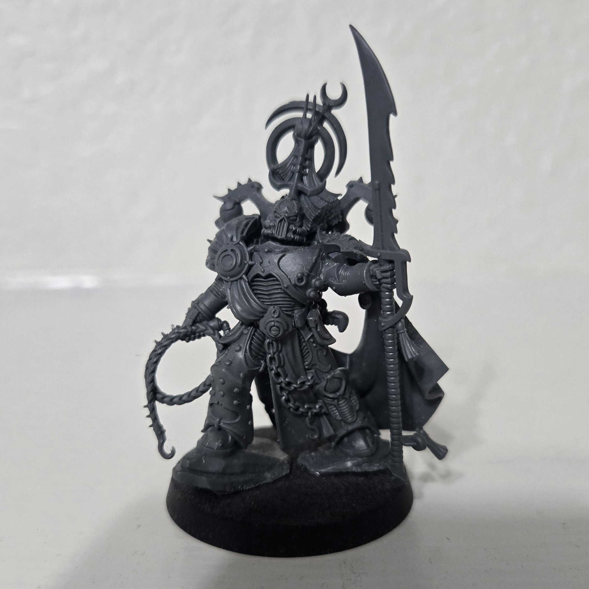
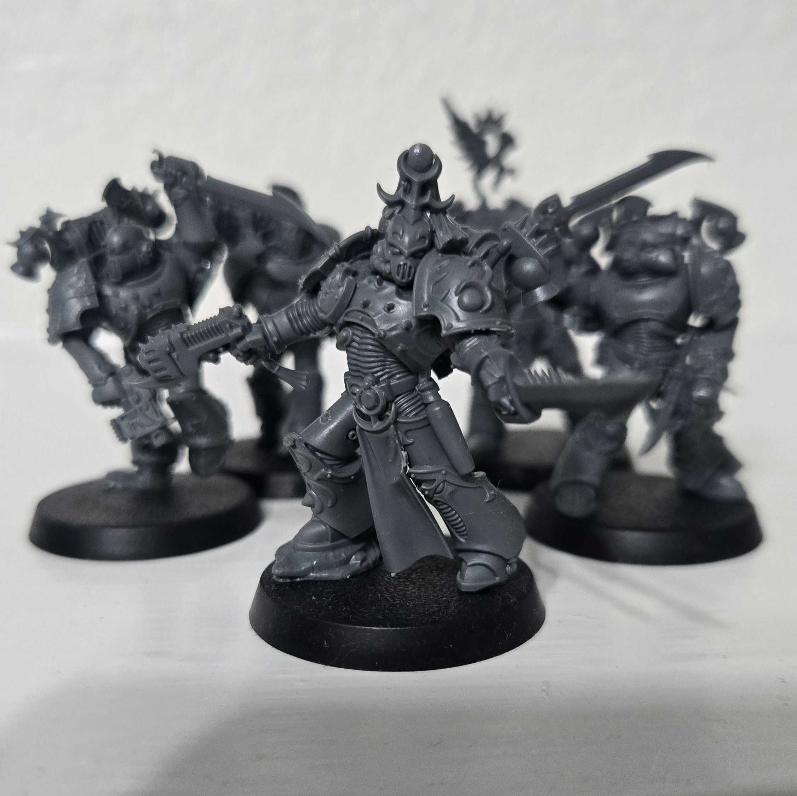
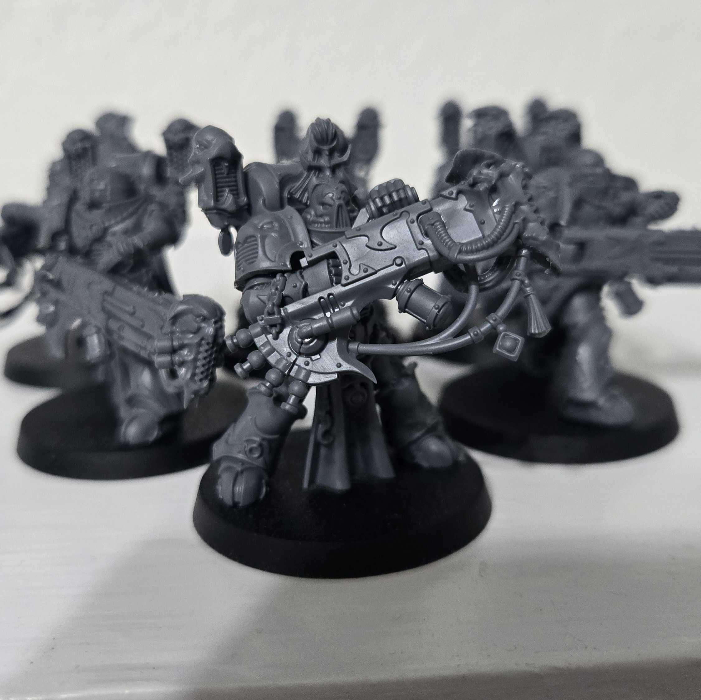

Fulgrim embodies the depravity and corruption of his once-noble Legion. His sinuous serpentine form towers over the battlefield and moves with quicksilver speed, lashing whip and thrashing tail scattering those beguiled by the grotesque magnificence of his daemonic form. Any who possess the wherewithal to resist the Daemon Primarch’s stupefying aura are cut down with casual ease.

Lords Exultant embody the Emperor’s Children’s obsessive desire to experience new and terrible sensations. Their enhanced forms possess all manner of sensory augmentations, allowing them to indulge in the thrill of battle on a level that would drive lesser mortals to insanity. With lash and pistol, they lead from the front, slaughtering their foes in exquisitely lurid fashion.

The Lords Kakophonist derive pleasure from auditory stimuli. Such is their singular obsession with emitting lethal sonic destruction that their entire bodies have been agonisingly sculpted to further their art. Leading bands of Noise Marines, these infernal conductors lead an orchestra of discordant and deafening slaughter.

Daemon Princes are infernal beasts whose Path to Glory has elevated them to daemonhood. Paragons of evil, warped and corrupted by Chaos, they lead their warbands in devastating assaults, striding through attacks from their mortal enemies and unleashing monstrous blows in the name of the Dark Gods.

Infractors are Chaos Space Marines of the Emperor's Children Legion who are one of the two major formations found among that Traitor Legion's common Heretic Astartes alongside the Tormentors. They are specialists in melee combat.

Tormentors go to war clad in garish power armour, clutching over-ornamented boltguns. They form the core of many Emperor’s Children warbands. Consumed by ego and desire, Tormentors are aggressive front-line troops who prioritise aggression and speed, always seeking new and greater experiences, and revelling in the gory deaths they inflict upon their enemies.

Noise Marines orchestrate riotous destruction on a massive scale. They saturate the war zone with piercing bursts of shattering clamour, thrumming waves of aural destruction and other extreme psychosonic attacks. These hedonistic worshippers of Slaanesh are inured to most stimuli and seek to unleash ever-increasing cacophonous destruction to stir their jaded senses.

Daemonettes are known to mortals as the handmaidens of Slaanesh. They are a mixture of the beautiful and the monstrous, made all the more disturbing by the visceral clash of both. They delight in the carnage of battle, weaving around the clumsy blows of their enemies as they shrill and sigh their delight amidst swift-taloned slaughter.